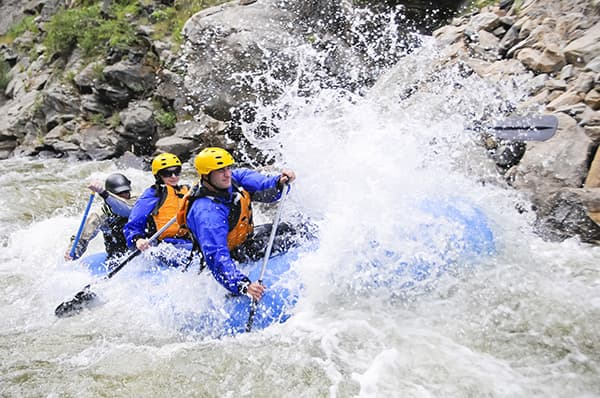
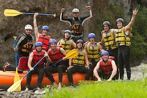

About Us - White Water Rafting
Our Goal

At White Water Rafting, our goal is to provide unforgettable water rafting experiences for tourists
who simply want to enjoy a great time on the river. We are committed to delivering safe, thrilling,
and fun-filled adventures for all skill levels. To ensure the best visual experience, our images are
high-resolution and sized appropriately to fill
the space without becoming pixelated or distorted. We use a responsive design approach, maintaining
each images
aspect ratio with a height set to auto and width set to 100% of the container.
History
Founded in 2000, White Water Rafting started with a single raft, a passion for the
outdoors, and a
mission to share
the excitement of river rafting with others. What began as a small local venture has grown into one
of the region's most
trusted rafting companies, known for its experienced guides, customer-focused service, and
unwavering commitment to
safety.
Over the years, we've guided thousands of adventurers down some of the most scenic
and exhilarating
rivers. Each trip is
more than just a ride — it's a chance to connect with nature, build lasting memories, and experience
the thrill of the
water like never before.